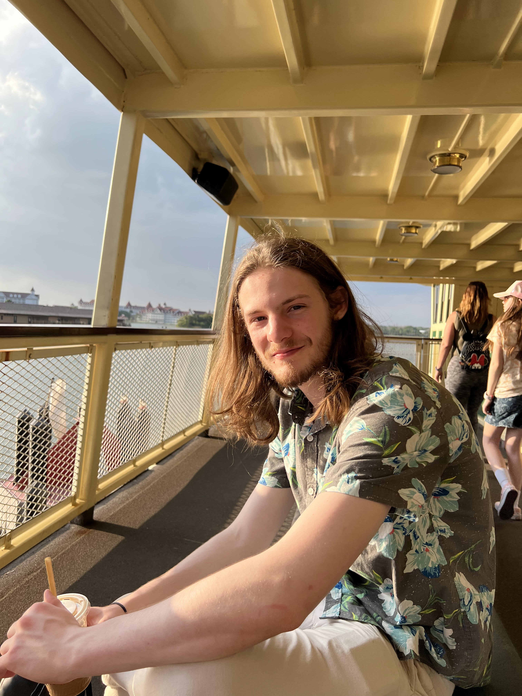

General Experience
Outside of school and work, I do a variety of activities. I enjoy sailing, camping, climbing, fencing, traveling, and generally anything with my friends! I was in the Boy Scouts of America for almost 10 years. I also was highly active in my High School's theater program and have done over 40 plays. I am from Houston, Texas but was born in Colorado.